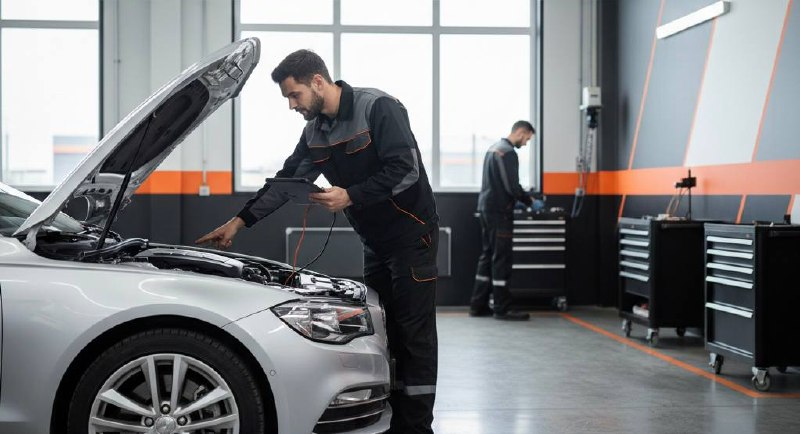

Автотехцентр «ГАГАРИНА 106» выполняет полный спектр работ по ремонту и обслуживанию легковых автомобилей. Мы помогаем не просто устранить текущую неисправность, а найти причину поломки, вовремя провести диагностику и сократить риск более дорогого ремонта в будущем.
Если автомобиль начал вести себя непривычно, появились посторонние звуки, вибрации, ошибки на панели или ухудшилась управляемость — лучше не затягивать. Чем раньше выявить проблему, тем проще и выгоднее её устранить.

Даже если неисправность кажется незначительной, лучше проверить автомобиль заранее. Во многих случаях своевременная диагностика помогает избежать серьёзных поломок и заметно снижает стоимость последующего ремонта.
Подвеска автомобиля служит одним из важнейших агрегатов и в тоже время она является самой уязвимой системой. Ввиду того, что на подвеску идут большие нагрузки, её детали довольно быстро изнашиваются и деформируются. Благодаря своевременной диагностике и ремонту подвески вы обеспечите безопасность всех пассажиров и избавите себя от значительных затрат на ремонт автомобиля.
Обычно подвеска при возникновении неисправностей начинает давать определённые сигналы, которые сложно не заметить. В первую очередь это могут быть стуки в передней либо задней части автомобиля, при их возникновении необходимо отправиться на СТО и выяснить причину.
О неисправности основных узлов подвески могут свидетельствовать крены, раскачивание корпуса и прочее при вхождении в поворот. Ещё одним видимым признаком быстрого изнашивания подвески служит быстрый износ шин.
Современный автомобиль состоит из множества сложнейших узлов и агрегатов, поэтому их замена является одной из самых популярных и востребованных услуг технических центров. Зачастую неисправность можно определить по заметным автовладельцу признакам, но случается так, что узнать о поломке можно только после проведения профессиональной качественной диагностики.
Рекомендуется регулярно диагностировать все системы транспортного средства, чтобы предотвратить более серьёзные повреждения и значительно сократить стоимость ремонтных работ. Специалисты автотехцентра «ГАГАРИНА 106» оперативно и с гарантией выполнят все необходимые работы как в зарубежных, так и отечественных автомобилях.
Сцепление обеспечивает автомобилю плавность движения и напрямую влияет на коробку передач. Сигналами неисправностей являются запах гари, посторонний шум, неправильная работа переключения. Стоимость замены сцепления может отличаться в зависимости от модели авто и характера неисправности.
Один из самых характерных признаков неисправности — стук в двигателе во время движения. Если при рабочей температуре двигателя (80°C) появляется нехарактерный шум, это явный признак неисправности.
Чтобы предотвратить серьёзную поломку, необходимо проводить своевременный осмотр и диагностику. Если при увеличении оборотов двигатель начинает визжать — не стоит откладывать поездку на СТО. О необходимости провести диагностику свидетельствует появление неприятного запаха топлива или масла в салоне.
Каждая деталь осматривается в обязательном порядке, все они тестируются на наличие дефектов. Техническое обслуживание двигателя необходимо проводить регулярно — это поможет предотвратить серьёзные поломки.
Современный автомобиль — это сложное устройство, оснащённое огромным количеством электрики, электронной техники и приборов. Двигатель автомобиля можно сравнить с сердцем человека, электрику — с нервной системой. В современных автомобилях присутствуют сотни узлов и соединений, отследить и отремонтировать которые может только профессионал.
Потекла рулевая рейка, руль стал вращаться туго или рывками, появился стук или люфт в рулевом колесе? Не спешите покупать новую рулевую рейку — ремонт обойдётся значительно дешевле. Предоставляя длительную гарантию, мы уверяем вас, что рулевая рейка будет работать как новая.
Наши специалисты с опытом работы более пяти лет отремонтировали рулевые рейки самых разных моделей зарубежных и отечественных автомобилей. Мы осуществляем ремонт рулевых реек и редукторов с гидроусилителем, а также гидравлических и механических реек.